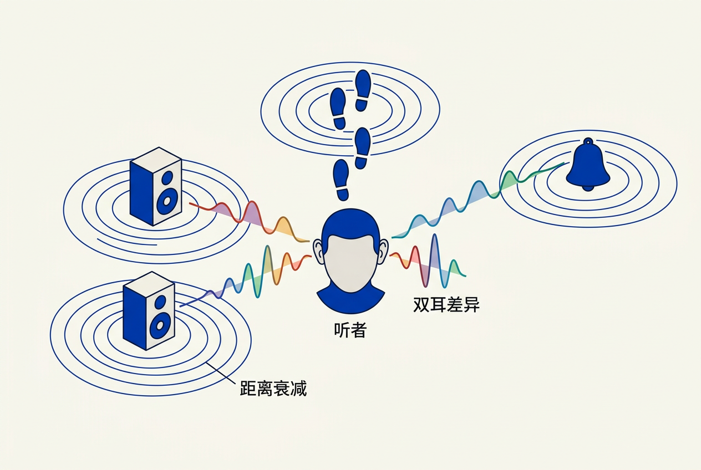

第15章：音频 — 零基础讲义
讲义说明本讲义基于 Jason Gregory 所著《Game Engine Architecture Volume II》第4版第15章（Audio, p.425-521）。
本版插画由 ImageGen + Guizang 材质插画标准流程生成。
学习目标
- 理解声音的物理原理和数字采样基础
- 掌握3D音频空间化五大技术（衰减/平移/HRTF/混响/遮挡）
- 了解主流音频中间件（Wwise/FMOD）的架构
15.1 声音的物理
15.1.1 声波基础
15.1.1.1 三个核心属性
| 属性 | 物理量 | 感知 | 游戏应用 |
|---|---|---|---|
| 振幅 | 声压（Pa） | 响度（dB） | 距离衰减曲线 |
| 频率 | 赫兹（Hz） | 音高 | 多普勒效应（警车驶过） |
| 波形 | 谐波成分 | 音色 | 材质区分（木质/金属地面脚步声） |
15.1.2 人类听觉关键参数
15.1.2.1 人耳的工程规格
- 频率范围： 20Hz-20kHz（随年龄衰减高频）
- 动态范围： 0dB（听觉阈值）到 120dB（痛阈）
- 等响曲线： 人耳对 3-4kHz 最敏感（婴儿哭声频率）——这就是为什么警报器在这个频段
- 双耳定位： ITD（时间差——声音先到左耳=来自左边）+ ILD（响度差——左耳大声=来自左边）+ HRTF（频谱差——辨别前后上下）
15.2 声音的数学
15.2.1 数字音频基础
15.2.1.1 PCM采样三参数
// 数字音频 = 采样率 × 位深度 × 通道数
// CD音质：44100Hz × 16bit × 2ch = 172KB/秒 = 10MB/分钟
// 游戏音效：48000Hz × 16bit × 1ch = 94KB/秒（常用妥协）
// 奈奎斯特定理：采样率 ≥ 最高频率的 2 倍
// 44100Hz → 最高还原 22050Hz（覆盖人耳上限）
// 48000Hz → 最高还原 24000Hz（留有余量）15.2.1.2 分贝（dB）— 对数标度
人耳对响度的感知是对数关系。10倍功率=+10dB（感觉"响了大约一倍"）。游戏中音量滑块用 dB 作为单位正是因为这个原因。
15.3 声音的技术
15.3.1 音频中间件
15.3.1.1 Wwise vs FMOD 对比
| Wwise | FMOD | |
|---|---|---|
| 市场定位 | 3A 主机游戏主流 | 独立游戏/中小型项目 |
| 授权费 | 收入分成（3A项目昂贵） | 分级订阅（有免费版） |
| 核心优势 | 极其灵活的音频总线、强大Profiler | 易上手、集成快、DAW风格界面 |
| 交互音乐 | 强（多层音乐轨+实时过渡） | 强（自适应音乐系统） |
几乎没有任何工作室自己写音频引擎——Wwise和FMOD统治了整个行业。
15.4 3D音频渲染

15.4.1 五项空间化核心技术
15.4.1.1 技术速查表
| 技术 | 做法 | 效果 | 计算代价 |
|---|---|---|---|
| 距离衰减 | 音量随距离指数/线性下降 | 远=小声 | 最低（一次乘法） |
| 立体声平移 | 按方位角分配左右声道权重 | 左边=左耳大声 | 低（sin/cos查表） |
| 混响 | 模拟声音在空间反弹造成的余音 | 大教堂=长混响（2-5秒） | 中（FIR/卷积） |
| 遮挡/衍射 | 墙后声音的高频衰减+衍射路径计算 | "墙后有声音"的感知 | 高（需要几何信息） |
| HRTF | 用头部传递函数模拟耳朵对声音的频响改变 | 分辨前/后/上/下来源 | 中（卷积） |
15.4.1.2 距离衰减曲线
// 典型的游戏音频衰减
// 近距离（0-5m）：音量不变（满）
// 中距离（5-50m）：线性下降
// 远距离（50-100m）：快速衰减到0
float Attenuation(float distance) {
if (distance < minDist) return 1.0f; // 满音量区
if (distance > maxDist) return 0.0f; // 完全听不到
float t = (distance - minDist) / (maxDist - minDist);
return 1.0f - t; // 线性衰减（或用对数）
}15.4.2 空间音频API
15.4.2.1 平台原生空间音频
现代平台提供硬件加速的空间音频：Windows Sonic / Dolby Atmos（Xbox/PC）、PS5 Tempest 3D AudioTech（极低延迟+数百个声源同时空间化）、Apple Spatial Audio（AirPods 头部追踪）。引擎只需提供声源的3D位置+方向，平台负责HRTF渲染。
15.5 音频引擎架构
15.5.1 分层架构
15.5.1.1 从游戏逻辑到扬声器的五层
// 音频系统的完整分层
游戏逻辑（C++/Blueprint）
↓ "播放脚步声"
引擎音频包装层（封装 Wwise/FMOD API）
↓ 设置 GameObject 位置、触发 Event
音频中间件（Wwise/FMOD 核心）
↓ 空间化、混合、DSP 效果、总线路由
平台音频 API（XAudio2 / WASAPI / CoreAudio）
↓ 提交 PCM 缓冲
音频驱动 → DAC（数模转换器） → 扬声器/耳机15.5.2 交互音乐系统
15.5.2.1 自适应音乐
现代游戏音乐不是"一首MP3循环播放"——而是多层音乐轨实时混合：基础层（一直播放的低频弦乐）+ 紧张层（战斗中叠加鼓点）+ 高潮层（Boss战加入合唱）。Wwise/FMOD 根据游戏状态（战斗/探索/Boss）改变各层的音量和过渡时长。
本章核心洞察
游戏音频的最高境界是完全沉浸——玩家不意识到"这是技术实现的"。而背后需要的引擎支持非常复杂：3D定位、混响、遮挡、交互音乐、动态混合……但没有工作室自己写音频引擎——Wwise/FMOD已完美解决所有已知难题。你的精力应该放在"如何用好中间件"而非"如何实现音频管线"。
📝 课后练习题（含答案）
双耳定位三要素：① ITD（时间差）——左边声音先到左耳 ② ILD（响度差）——头遮住部分声音，左耳更响 ③ HRTF（频谱差）——耳朵形状对不同方向有不同滤波效果。对前后上下的判断主要靠 HRTF。
奈奎斯特定理：采样率 ≥ 最高频率×2。人耳上限≈20kHz→需40kHz。44100 > 40000，恰好也有历史原因——早期数字录音用录像带，每行可存3个采样，NTSC制式245行×60Hz×3=44100。
🤖 qAagent问答区
大团队/3A项目 → Wwise： 更强大的混合总线、Profiler、互动音乐系统。小团队/独立游戏 → FMOD： 免费版可用、上手快、DAW风格界面让音频设计师零学习成本。两者功能都已远超任何游戏的实际需求——"选哪个都不会错"。
- 学习目标
- 学习目标
- 15.1 声音的物理
- 15.1.1 声波基础
- 15.1.1.1 三个核心属性
- 15.1.2 人类听觉关键参数
- 15.1.2.1 人耳的工程规格
- 15.2 声音的数学
- 15.2.1 数字音频基础
- 15.2.1.1 PCM采样三参数
- 15.2.1.2 分贝（dB）— 对数标度
- 15.3 声音的技术
- 15.3.1 音频中间件
- 15.3.1.1 Wwise vs FMOD 对比
- 15.4 3D音频渲染
- 15.4.1 五项空间化核心技术
- 15.4.1.1 技术速查表
- 15.4.1.2 距离衰减曲线
- 15.4.2 空间音频API
- 15.4.2.1 平台原生空间音频
- 15.5 音频引擎架构
- 15.5.1 分层架构
- 15.5.1.1 从游戏逻辑到扬声器的五层
- 15.5.2 交互音乐系统
- 15.5.2.1 自适应音乐
- 本章核心洞察
- 📝 课后练习题（含答案）